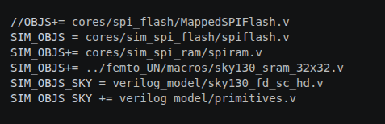
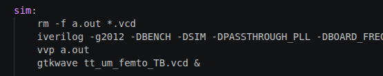
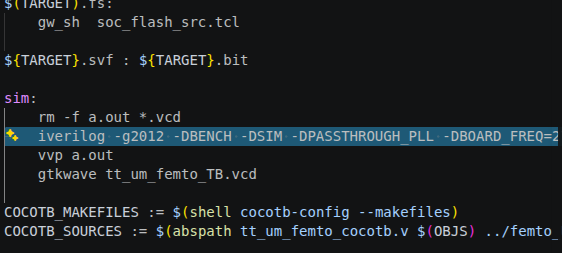
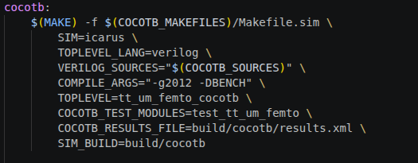

Integracion con el ASIC
4. Integración en el SoC (femto_UN/src/femto.v)
La integración se lleva a cabo en el archivo top-level del SoC femto.v, sin alterar el núcleo FemtoRV32 ni ningún otro periférico existente.
4.1 Mapeo de Direcciones (Memory Map)
Se habilita la línea de selección cs[4] (7'b0010000) en el rango base 0x00410000:
// Decodificador de direcciones
always @*
begin
case (mem_address)
16'h0000: cs = 7'b0000001; // Flash SPI (Programa)
16'h0040: cs = 7'b0100000; // UART
16'h0041: cs = 7'b0010000; // OpenRAM Interna (16x8)
16'h0001: cs = 7'b1000000; // SPI RAM externa
default: cs = 7'b0000001;
endcase
end
4.2 Instanciación del Macro y Handshake
MappedSPIFlash mapped_spi_flash(
.clk(clk),
.reset(resetn),
.rstrb(cs[0] & rd),
.word_address(mem_address[21:2]),
.rdata(RAM_rdata),
.rbusy(mapped_spi_flash_rbusy),
.CLK(spi_clk),
.CS_N(spi_cs_n),
.MISO(spi_miso),
.MOSI(spi_mosi)
);
wire [31:0] uart_dout;
// wire [31:0] dpram_dout;
// ============== OpenRAM Internal SRAM (16x8) ========================
wire [8:0] sram_dout_raw;
wire [7:0] sram_dout = sram_dout_raw[7:0];
wire sram_cs = (mem_address == 16'h0041);
wire sram_csb = ~(sram_cs & (mem_rstrb | wr));
wire sram_web = ~(sram_cs & wr);
sky130_sram_16x8 u_sram (
`ifdef USE_POWER_PINS
.vccd1(1'b1),
.vssd1(1'b0),
`endif
.clk0(clk),
.csb0(sram_csb),
.web0(sram_web),
.spare_wen0(1'b0),
.addr0(mem_address[5:2]),
.din0({1'b0, mem_wdata[7:0]}),
.dout0(sram_dout_raw)
);
4.3 Multiplexor de Lectura de Datos (mem_rdata)
always @*
begin
case (cs)
7'b1000000: mem_rdata = dpram_dout;
7'b0100000: mem_rdata = uart_dout;
7'b0010000: mem_rdata = {24'd0, sram_dout}; // Lectura OpenRAM
7'b0000001: mem_rdata = RAM_rdata;
default: mem_rdata = 32'h00000000;
endcase
end
Análisis de Señales de Control
addr0(mem_address[5:2]): Se toman los bits[5:2]para acceder a 16 posiciones alineadas a palabras de 32 bits (0x00410000,0x00410004, ...,0x0041003C), compatible tanto con instrucciones de byte (sb/lb) como de palabra (sw/lw).din0({1'b0, mem_wdata[7:0]}): El byte a escribir se conecta en los bits[7:0]y el noveno bit de reserva se conecta a tierra.spare_wen0(1'b0): Deshabilita la escritura en la columna de reserva.csb0yweb0: Ambos son activos en bajo (active-low). En reposo permanecen en1. En lectura (sram_cs & mem_rstrb),csb0=0yweb0=1. En escritura (sram_cs & wr),csb0=0yweb0=0.
Temporización del Procesador FemtoRV32 Quark y Wait-States
El núcleo FemtoRV32 Quark implementa la siguiente condición para transicionar de estado:
Esto significa que el procesador siempre entra al estadoWAIT_ALU_OR_MEM durante exactamente 1 ciclo de reloj en toda instrucción de lectura (isLoad) y escritura (isStore):
- Ciclo
EXECUTE: El procesador evalúa la dirección efectiva (loadstore_addr), activamem_rstrb = 1y selecciona el macro (csb0 = 0,web0 = 1). En el flanco positivo de reloj que cierra este ciclo, OpenRAM muestrea la dirección. - Ciclo
WAIT_ALU_OR_MEM: Durante este ciclo, OpenRAM entrega el dato leído endout0. En el siguiente flanco de reloj de subida, el banco de registros capturawriteBackDatay el procesador avanza aFETCH_INSTR.
Por lo tanto, no se requiere ninguna señal artificial sram_rbusy. Si se agregara un rbusy de 1 ciclo adicional, se forzaría al procesador a esperar 2 ciclos en WAIT_ALU_OR_MEM, provocando que el modelo OpenRAM invalide la salida a 'x' al deseleccionarse csb0.
5. Configuración de OpenLane (config.json)
En femto_UN/src/config.json, se añaden las directivas de LibreLane para la inclusión del macro, colocación estática y conexión de redes de potencia:
"//": "OpenRAM Hard Macro Configuration",
"MACROS": {
"sky130_sram_16x8": {
"gds": ["dir::../macros/sky130_sram_16x8.gds"],
"lef": ["dir::../macros/sky130_sram_16x8.lef"],
"instances": {
"femto0.u_sram": {
"location": [15, 35],
"orientation": "N"
}
},
"nl": ["dir::../macros/sky130_sram_16x8.v"]
}
},
"EXTRA_LEFS": ["dir::../macros/sky130_sram_16x8.lef"],
"EXTRA_GDS_FILES": ["dir::../macros/sky130_sram_16x8.gds"],
"EXTRA_LIBS": ["dir::../macros/sky130_sram_16x8_TT_1p8V_25C.lib"],
"PDN_MACRO_CONNECTIONS": [
"femto0.u_sram vccd1 vssd1 vccd1 vssd1"
]
5.1 Ubicación Física (Floorplan)
Se define la ubicación en el archivo config.json de OpenLane en las coordenadas:
- Posición:
[15.0, 35.0]\(\mu\text{m}\) - Orientación:
N(Normal) - Ocupación espacial:
- Eje \(X\): de \(15.0\,\mu\text{m}\) a \(148.815\,\mu\text{m}\) (margen izquierdo de \(15\,\mu\text{m}\)).
- Eje \(Y\): de \(35.0\,\mu\text{m}\) a \(180.470\,\mu\text{m}\) (margen inferior de \(35\,\mu\text{m}\) y superior de \(\sim 35.5\,\mu\text{m}\)).
Esta colocación centrada verticalmente a la izquierda minimiza longitudes de interconexión hacia las redes de alimentación (PDN) y deja todo el lado derecho libre para la colocación de celdas estándar.
6. Configuración de Tiny Tapeout (info.yaml)
Se agrega el modelo blackbox a la lista de fuentes compilables por OpenLane dentro de info.yaml:
# How many tiles your design occupies?
tiles: "4x2"
top_module: "tt_um_femto"
source_files:
- "femto.v"
- "MappedSPIRAM.v"
- "MappedSPIFlash.v"
- "perip_uart.v"
- "uart.v"
- "femtorv32_quark.v"
- "sky130_sram_16x8_bb.v"
7 Cambio del Makefile en la carpeta tinytapeout.
Para que tanto la simulación RTL estándar (make sim con Icarus Verilog + GTKWave) como la verificación funcional (make cocotb) integren el modelo de la memoria interna OpenRAM (sky130_sram_16x8), se realizaron los siguientes cambios sobre tinytapeout/Makefile (conservando respaldo previo en Makefile.bak):
- Inclusión del modelo Verilog de la SRAM: Se añadió la ruta al archivo fuente
sky130_sram_16x8.vdentro de la variable de fuentes (VERILOG_SOURCES).

-
Definición de macros de simulación: Se incorporaron las directivas necesarias (como
-Dfunctionalo-DUSE_POWER_PINSsegún la celda) para evitar errores de puertos de alimentación (vccd1/vssd1) durante la simulación lógica.
-
Unificación de dependencias: Tanto el target
simcomococotbapuntan ahora a la misma lista de fuentes y rutas.


7.1 Integracion del cocotb
Para integrar la verificación funcional mediante Cocotb, se añadieron en tinytapeout/Makefile las rutas de configuración del entorno (COCOTB_MAKEFILES), la lista unificada de fuentes con el wrapper y el modelo funcional de la memoria (COCOTB_SOURCES), y los dos objetivos de simulación (cocotb y cocotb_openram) configurados con Icarus Verilog y exportación de ondas (WAVES=1):
COCOTB_MAKEFILES := $(shell cocotb-config --makefiles)
COCOTB_SOURCES := $(abspath tt_um_femto_cocotb.v $(OBJS) ../femto_UN/macros/sky130_sram_16x8.v)
cocotb:
$(MAKE) -f$(COCOTB_MAKEFILES)/Makefile.sim \
SIM=icarus \
TOPLEVEL_LANG=verilog \
VERILOG_SOURCES="$(COCOTB_SOURCES)" \
COMPILE_ARGS="-g2012 -DBENCH" \
TOPLEVEL=tt_um_femto_cocotb \
COCOTB_TEST_MODULES=test_tt_um_femto \
COCOTB_RESULTS_FILE=build/cocotb/results.xml \
SIM_BUILD=build/cocotb \
WAVES=1
cocotb_openram:
$(MAKE) -f$(COCOTB_MAKEFILES)/Makefile.sim \
SIM=icarus \
TOPLEVEL_LANG=verilog \
VERILOG_SOURCES="$(COCOTB_SOURCES)" \
COMPILE_ARGS="-g2012 -DBENCH" \
TOPLEVEL=tt_um_femto_cocotb \
COCOTB_TEST_MODULES=test_tt_um_femto_openram \
COCOTB_RESULTS_FILE=build/cocotb_openram/results.xml \
SIM_BUILD=build/cocotb_openram \
WAVES=1
Ver tinytapeout/Makefile completo (Clic para expandir)
1 2 3 4 5 6 7 8 9 10 11 12 13 14 15 16 17 18 19 20 21 22 23 24 25 26 27 28 29 30 31 32 33 34 35 36 37 38 39 40 41 42 43 44 45 46 47 48 49 50 51 52 53 54 55 56 57 58 59 60 61 62 63 64 65 66 67 68 69 70 71 72 73 74 75 76 77 78 79 80 81 82 83 84 85 86 87 88 89 90 91 92 93 94 95 96 97 98 99 100 101 102 103 104 105 106 107 108 109 110 111 112 113 114 115 116 117 118 119 120 121 122 123 124 125 126 127 128 129 130 131 132 133 134 135 136 137 138 139 140 141 142 143 144 145 | |